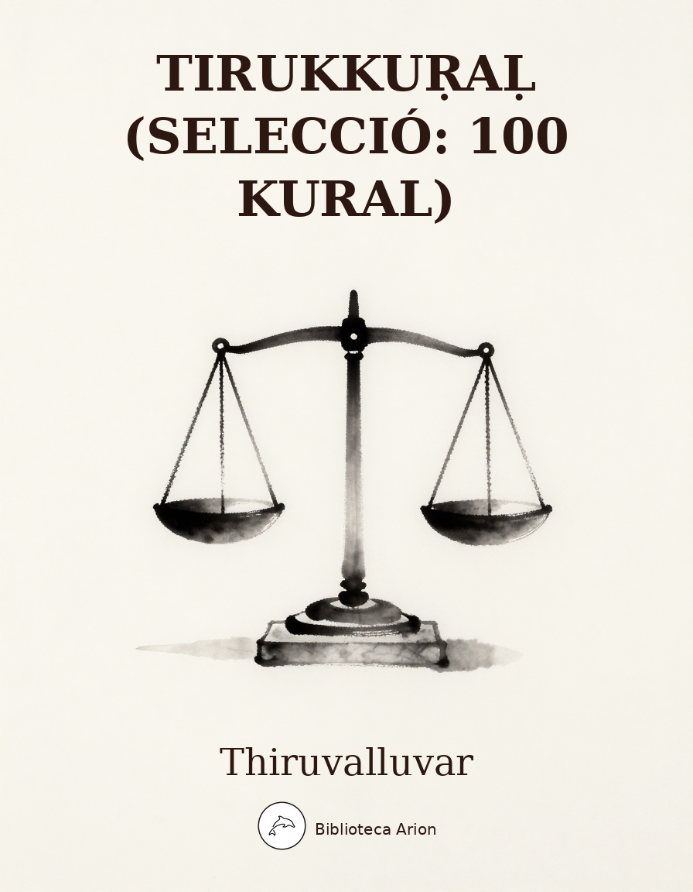

Tirukkuṛaḷ (selecció: 100 kural)
திருக்குறள்
Selecció de 100 kurals (dístics) del Tirukkuṛaḷ, obra mestra de la literatura tàmil i un dels textos ètics més importants de la humanitat. Organitzat en tres llibres: Aram (Virtut), Porul (Riquesa) i Inbam (Amor), el Tirukkuṛaḷ condensa en 1330 versets curts tota una filosofia de vida. Aquesta selecció recull 100 dels kurals més representatius.
Thiruvalluvar (திருவள்ளுவர்)
Selecció de 100 kurals dels tres llibres: Aram (அறம், Virtut), Porul (பொருள், Riquesa) i Inbam (இன்பம், Amor).
Text original en tàmil (domini públic, c. segle III aC – segle V dC).
Llibre I: அறம் (Aram — Virtut)
Capitol 1: கடவுள் வாழ்த்து — Lloanca de Deu
Kural 1
அகர முதல எழுத்தெல்லாம் ஆதி பகவன் முதற்றே உலகு.
Akara Mudhala Ezhuththellaam Aadhi / Pakavan Mudhatre Ulaku
[EN: ‘A’ leads letters; the Ancient Lord Leads and lords the entire world]
Kural 2
கற்றதனால் ஆய பயனென்கொல் வாலறிவன் நற்றாள் தொழாஅர் எனின்.
Katradhanaal Aaya Payanenkol Vaalarivan / Natraal Thozhaaar Enin
[EN: That lore is vain which does not fall At His good feet who knoweth all]
Kural 10
பிறவிப் பெருங்கடல் நீந்துவர் நீந்தார் இறைவன் அடிசேரா தார்.
Piravip Perungatal Neendhuvar Neendhaar / Iraivan Atiseraa Thaar
[EN: The sea of births they alone swim Who clench His feet and cleave to Him]
Capitol 2: வான்சிறப்பு — Excellencia de la pluja
Kural 11
வான்நின்று உலகம் வழங்கி வருதலால் தான்அமிழ்தம் என்றுணரற் பாற்று.
Vaannindru Ulakam Vazhangi Varudhalaal / Thaanamizhdham Endrunarar Paatru
[EN: The genial rain ambrosia call: The world but lasts while rain shall fall]
Kural 15
கெடுப்பதூஉம் கெட்டார்க்குச் சார்வாய்மற் றாங்கே எடுப்பதூஉம் எல்லாம் மழை.
Ketuppadhooum Kettaarkkuch Chaarvaaimar Raange / Etuppadhooum Ellaam Mazhai
[EN: Destruction it may sometimes pour But only rain can life restore]
Capitol 3: நீத்தார் பெருமை — Grandesa dels ascetes
Kural 21
ஒழுக்கத்து நீத்தார் பெருமை விழுப்பத்து வேண்டும் பனுவல் துணிவு.
Ozhukkaththu Neeththaar Perumai Vizhuppaththu / Ventum Panuval Thunivu
[EN: No merit can be held so high As theirs who sense and self deny]
Kural 25
ஐந்தவித்தான் ஆற்றல் அகல்விசும்பு ளார்கோமான் இந்திரனே சாலுங் கரி.
Aindhaviththaan Aatral Akalvisumpu Laarkomaan / Indhirane Saalung Kari
[EN: Indra himself has cause to say How great the power ascetics’ sway]
Capitol 4: அறன்வலியுறுத்தல் — Afirmacio de la virtut
Kural 31
சிறப்புஈனும் செல்வமும் ஈனும் அறத்தினூஉங்கு ஆக்கம் எவனோ உயிர்க்கு.
Sirappu Eenum Selvamum Eenum / Araththinooungu Aakkam Evano Uyirkku
[EN: From virtue weal and wealth outflow; What greater good can mankind know?]
Kural 34
மனத்துக்கண் மாசிலன் ஆதல் அனைத்தறன் ஆகுல நீர பிற.
Manaththukkan Maasilan Aadhal Anaiththu / Aran Aakula Neera Pira
[EN: In spotless mind virtue is found And not in show and swelling sound]
Capitol 5: இல்வாழ்க்கை — Vida domestica
Kural 41
இல்வாழ்வான் என்பான் இயல்புடைய மூவர்க்கும் நல்லாற்றின் நின்ற துணை.
Ilvaazhvaan Enpaan Iyalputaiya Moovarkkum / Nallaatrin Nindra Thunai
[EN: The ideal householder is he Who aids the natural orders there]
Kural 45
அன்பும் அறனும் உடைத்தாயின் இல்வாழ்க்கை பண்பும் பயனும் அது.
Anpum Aranum Utaiththaayin Ilvaazhkkai / Panpum Payanum Adhu
[EN: In grace and gain the home excels, Where love with virtue sweetly dwells]
Kural 50
வையத்துள் வாழ்வாங்கு வாழ்பவன் வான்உறையும் தெய்வத்துள் வைக்கப் படும்.
Vaiyaththul Vaazhvaangu Vaazhpavan Vaanu�ryum / Theyvaththul Vaikkap Patum
[EN: He is a man of divine worth Who lives in ideal home on earth]
Capitol 6: வாழ்க்கைத் துணைநலம் — L’esposa
Kural 51
மனைக்தக்க மாண்புடையள் ஆகித்தற் கொண்டான் வளத்தக்காள் வாழ்க்கைத் துணை.
Manaikdhakka Maanputaiyal Aakiththar Kontaan / Valaththakkaal Vaazhkkaith Thunai
[EN: A good housewife befits the house, Spending with thrift the mate’s resource]
Kural 56
தற்காத்துத் தற்கொண்டாற் பேணித் தகைசான்ற சொற்காத்துச் சோர்விலாள் பெண்.
Tharkaaththuth Tharkontaar Penith Thakaisaandra / Sorkaaththuch Chorvilaal Pen
[EN: The good wife guards herself from blame, She tends her spouse and brings him fame]
Capitol 7: புதல்வரைப் பெறுதல் — Els fills
Kural 61
பெறுமவற்றுள் யாமறிவது இல்லை அறிவறிந்த மக்கட்பேறு அல்ல பிற.
Perumavatrul Yaamarivadhu Illai Arivarindha / Makkatperu Alla Pira
[EN: The world no higher bliss bestows Than children virtuous and wise]
Kural 67
தந்தை மகற்காற்றும் நன்றி அவையத்து முந்தி இருப்பச் செயல்.
Thandhai Makarkaatrum Nandri Avaiyaththu / Mundhi Iruppach Cheyal
[EN: A father’s duty to his son is To seat him in front of the wise]
Capitol 8: அன்புடைமை — Amor i bondat
Kural 71
அன்பிற்கும் உண்டோ அடைக்குந்தாழ் ஆர்வலர் புன்கணீர் பூசல் தரும்.
Anpirkum Unto Ataikkundhaazh Aarvalar / Punkaneer Poosal Tharum
[EN: What bolt can bar true love in fact The tricking tears reveal the heart]
Kural 76
அறத்திற்கே அன்புசார் பென்ப அறியார் மறத்திற்கும் அஃதே துணை.
Araththirke Anpusaar Penpa Ariyaar / Maraththirkum Aqdhe Thunai
[EN: "Love is virtue’s friend" say know-nots It helps us against evil plots]
Kural 80
அன்பின் வழியது உயிர்நிலை அஃதிலார்க்கு என்புதோல் போர்த்த உடம்பு.
Anpin Vazhiyadhu Uyirnilai Aqdhilaarkku / Enpudhol Porththa Utampu
[EN: The seat of life is love alone; Or beings are but skin and bone!]
Capitol 9: விருந்தோம்பல் — Hospitalitat
Kural 81
இருந்தோம்பி இல்வாழ்வ தெல்லாம் விருந்தோம்பி வேளாண்மை செய்தற் பொருட்டு.
Irundhompi Ilvaazhva Thellaam Virundhompi / Velaanmai Seydhar Poruttu
[EN: Men set up home, toil and earn To tend the guests and do good turn]
Kural 86
செல்விருந்து ஓம்பி வருவிருந்து பார்த்திருப்பான் நல்வருந்து வானத் தவர்க்கு.
Selvirundhu Ompi Varuvirundhu Paarththiruppaan / Nalvarundhu Vaanath Thavarkku
[EN: Who tends a guest and looks for next Is a welcome guest in heaven’s feast]
Capitol 10: இனியவைகூறல் — Paraules dolces
Kural 91
இன்சொலால் ஈரம் அளைஇப் படிறுஇலவாம் செம்பொருள் கண்டார்வாய்ச் சொல்.
Insolaal Eeram Alaiip Patiruilavaam / Semporul Kantaarvaaich Chol
[EN: The words of Seers are lovely sweet Merciful and free from deceit]
Kural 95
பணிவுடையன் இன்சொலன் ஆதல் ஒருவற்கு அணியல்ல மற்றுப் பிற.
Panivutaiyan Insolan Aadhal Oruvarku / Aniyalla Matrup Pira
[EN: To be humble and sweet words speak No other jewel do wise men seek]
Kural 100
இனிய உளவாக இன்னாத கூறல் கனிஇருப்பக் காய்கவர்ந் தற்று.
Iniya Ulavaaka Innaadha Kooral / Kaniiruppak Kaaikavarn Thatru
[EN: Leaving ripe fruits the raw he eats Who speaks harsh words when sweet word suits]
Capitol 11: செய்ந்நன்றி அறிதல் — Gratitud
Kural 101
செய்யாமல் செய்த உதவிக்கு வையகமும் வானகமும் ஆற்றல் அரிது.
Seyyaamal Seydha Udhavikku Vaiyakamum / Vaanakamum Aatral Aridhu
[EN: Unhelped in turn good help given Exceeds in worth earth and heaven]
Kural 105
உதவி வரைத்தன்று உதவி உதவி செயப்பட்டார் சால்பின் வரைத்து.
Udhavi Varaiththandru Udhavi Udhavi / Seyappattaar Saalpin Varaiththu
[EN: A help is not the help’s measure It is gainer’s worth and pleasure]
Kural 110
எந்நன்றி கொன்றார்க்கும் உய்வுண்டாம் உய்வில்லை செய்ந்நன்றி கொன்ற மகற்கு.
Ennandri Kondraarkkum Uyvuntaam Uyvillai / Seynnandri Kondra Makarku
[EN: The virtue-killer may be saved Not benefit-killer who is damned]
Capitol 12: நடுவு நிலைமை — Imparcialitat
Kural 111
தகுதி எனவொன்று நன்றே பகுதியால் பாற்பட்டு ஒழுகப் பெறின்.
Thakudhi Enavondru Nandre Pakudhiyaal / Paarpattu Ozhukap Perin
[EN: Equity is supreme virtue It is to give each man his due]
Kural 115
கேடும் பெருக்கமும் இல்லல்ல நெஞ்சத்துக் கோடாமை சான்றோர்க் கணி.
Ketum Perukkamum Illalla Nenjaththuk / Kotaamai Saandrork Kani
[EN: Loss and gain by cause arise; Equal mind adorns the wise]
Capitol 13: அடக்கமுடைமை — Autocontrol
Kural 121
அடக்கம் அமரருள் உய்க்கும் அடங்காமை ஆரிருள் உய்த்து விடும்.
Atakkam Amararul Uykkum Atangaamai / Aarirul Uyththu Vitum
[EN: Self-rule leads to realms of gods Indulgence leads to gloomy hades]
Kural 125
எல்லார்க்கும் நன்றாம் பணிதல் அவருள்ளும் செல்வர்க்கே செல்வம் தகைத்து.
Ellaarkkum Nandraam Panidhal Avarullum / Selvarkke Selvam Thakaiththu
[EN: Humility is good for all To the rich it adds a wealth special]
Kural 130
கதங்காத்துக் கற்றடங்கல் ஆற்றுவான் செவ்வி அறம்பார்க்கும் ஆற்றின் நுழைந்து.
Kadhangaaththuk Katratangal Aatruvaan Sevvi / Arampaarkkum Aatrin Nuzhaindhu
[EN: Virtue seeks and peeps to see Self-controlled savant anger free]
Capitol 14: ஒழுக்கமுடைமை — Propietat moral
Kural 131
ஒழுக்கம் விழுப்பந் தரலான் ஒழுக்கம் உயிரினும் ஓம்பப் படும்.
Ozhukkam Vizhuppan Tharalaan Ozhukkam / Uyirinum Ompap Patum
[EN: Decorum does one dignity More than life guard its purity]
Kural 133
ஒழுக்கம் உடைமை குடிமை இழுக்கம் இழிந்த பிறப்பாய் விடும்.
Ozhukkam Utaimai Kutimai Izhukkam / Izhindha Pirappaai Vitum
[EN: Good conduct shows good family Low manners mark anomaly]
Capitol 15: பிறனில் விழையாமை — No cobejar la dona aliena
Kural 141
பிறன்பொருளாள் பெட்டொழுகும் பேதைமை ஞாலத்து அறம்பொருள் கண்டார்கண் இல்.
Piranporulaal Pettozhukum Pedhaimai Gnaalaththu / Aramporul Kantaarkan Il
[EN: Who know the wealth and virtue’s way After other’s wife do not stray]
Capitol 16: பொறையுடைமை — Paciencia
Kural 151
அகழ்வாரைத் தாங்கும் நிலம்போலத் தம்மை இகழ்வார்ப் பொறுத்தல் தலை.
Akazhvaaraith Thaangum Nilampolath Thammai / Ikazhvaarp Poruththal Thalai
[EN: As earth bears up with diggers too To bear revilers is prime virtue]
Kural 155
ஒறுத்தாரை ஒன்றாக வையாரே வைப்பர் பொறுத்தாரைப் பொன்போற் பொதிந்து.
Oruththaarai Ondraaka Vaiyaare Vaippar / Poruththaaraip Ponpor Podhindhu
[EN: Vengeance is not in esteem held Patience is praised as hidden gold]
Kural 160
உண்ணாது நோற்பார் பெரியர் பிறர்சொல்லும் இன்னாச்சொல் நோற்பாரின் பின்.
Unnaadhu Norpaar Periyar Pirarsollum / Innaachchol Norpaarin Pin
[EN: Who fast are great to do penance Greater are they who bear offence]
Llibre II: பொருள் (Porul — Riquesa)
Capitol 39: இறைமாட்சி — Grandesa del rei
Kural 381
படைகுடி கூழ்அமைச்சு நட்பரண் ஆறும் உடையான் அரசருள் ஏறு.
Pataikuti Koozhamaichchu Natparan Aarum / Utaiyaan Arasarul Eru
[EN: People, troops, wealth, forts, council, friends Who owns these six is lion of kings]
Kural 383
தூங்காமை கல்வி துணிவுடைமை இம்மூன்றும் நீங்கா நிலனான் பவர்க்கு.
Thoongaamai Kalvi Thunivutaimai Immoondrum / Neengaa Nilanaan Pavarkku
[EN: Alertness, learning bravery Are adjuncts three of monarchy]
Kural 390
கொடையளி செங்கோல் குடியோம்பல் நான்கும் உடையானாம் வேந்தர்க் கொளி.
Kotaiyali Sengol Kutiyompal Naankum / Utaiyaanaam Vendhark Koli
[EN: He is the Light of Kings who has Bounty, justice, care and grace]
Capitol 40: கல்வி — L’aprenentatge
Kural 391
கற்க கசடறக் கற்பவை கற்றபின் நிற்க அதற்குத் தக.
Karka Kasatarak Karpavai Katrapin / Nirka Adharkuth Thaka
[EN: Lore worth learning, learn flawlessly Live by that learning thoroughly]
Kural 395
உடையார்முன் இல்லார்போல் ஏக்கற்றுங் கற்றார் கடையரே கல்லா தவர்.
Utaiyaarmun Illaarpol Ekkatrung Katraar / Kataiyare Kallaa Thavar
[EN: Like poor before rich they yearn: For knowledge: the low never learn]
Kural 400
கேடில் விழுச்செல்வம் கல்வி யொருவற்கு மாடல்ல மற்றை யவை.
Ketil Vizhuchchelvam Kalvi Yoruvarku / Maatalla Matrai Yavai
[EN: Learning is wealth none could destroy Nothing else gives genuine joy]
Capitol 43: அறிவுடைமை — El coneixement
Kural 421
அறிவற்றங் காக்குங் கருவி செறுவார்க்கும் உள்ளழிக்க லாகா அரண்.
Arivatrang Kaakkung Karuvi Seruvaarkkum / Ullazhikka Laakaa Aran
[EN: Wisdom’s weapon wards off all woes It is a fort defying foes]
Kural 423
எப்பொருள் யார்யார்வாய்க் கேட்பினும் அப்பொருள் மெய்ப்பொருள் காண்ப தறிவு.
Epporul Yaaryaarvaaik Ketpinum Apporul / Meypporul Kaanpa Tharivu
[EN: To grasp the Truth from everywhere From everyone is wisdom fair]
Kural 430
அறிவுடையார் எல்லா முடையார் அறிவிலார் என்னுடைய ரேனும் இலர்.
Arivutaiyaar Ellaa Mutaiyaar Arivilaar / Ennutaiya Renum Ilar
[EN: Who have wisdom they are all full Whatev’r they own, misfits are nil]
Capitol 44: குற்றங்கடிதல் — Evitar les faltes
Kural 431
செருக்குஞ் சினமும் சிறுமையும் இல்லார் பெருக்கம் பெருமித நீர்த்து.
Serukkunj Chinamum Sirumaiyum Illaar / Perukkam Perumidha Neerththu
[EN: Plenty is their prosperity Who’re free from wrath pride lust petty]
Kural 436
தன்குற்றம் நீக்கிப் பிறர்குற்றங் காண்கிற்பின் என்குற்ற மாகும் இறைக்கு?
Thankutram Neekkip Pirarkutrang Kaankirpin / Enkutra Maakum Iraikku?
[EN: What fault can be the king’s who cures First his faults, then scans others]
Capitol 48: வலியறிதல் — Jutjar la forca
Kural 471
வினைவலியும் தன்வலியும் மாற்றான் வலியும் துணைவலியும் தூக்கிச் செயல்.
Vinaivaliyum Thanvaliyum Maatraan Valiyum / Thunaivaliyum Thookkich Cheyal
[EN: Judge act and might and foeman’s strength The allies’ strength and go at length]
Kural 475
பீலிபெய் சாகாடும் அச்சிறும் அப்பண்டஞ் சால மிகுத்துப் பெயின்.
Peelipey Saakaatum Achchirum Appantanjjch / Aala Mikuththup Peyin
[EN: Even the gentle peacock’s plume Cart’s axle breaks by gross volume]
Capitol 50: இடனறிதல் — Jutjar el lloc
Kural 491
தொடங்கற்க எவ்வினையும் எள்ளற்க முற்றும் இடங்கண்ட பின்அல் லது.
Thotangarka Evvinaiyum Ellarka Mutrum / Itanganta Pinal Ladhu
[EN: No action take, no foe despise Until you have surveyed the place]
Kural 495
நெடும்புனலுள் வெல்லும் முதலை அடும்புனலின் நீங்கின் அதனைப் பிற.
Netumpunalul Vellum Mudhalai Atumpunalin / Neengin Adhanaip Pira
[EN: In water crocodile prevails In land before others it fails]
Capitol 53: சுற்றந்தழால் — Vinculacio als grans
Kural 521
பற்றற்ற கண்ணும் பழைமைபா ராட்டுதல் சுற்றத்தார் கண்ணே உள.
Patratra Kannum Pazhaimaipaa Raattudhal / Sutraththaar Kanne Ula
[EN: Let fortunes go; yet kinsmen know The old accustomed love to show]
Kural 525
கொடுத்தலும் இன்சொலும் ஆற்றின் அடுக்கிய சுற்றத்தால் சுற்றப் படும்.
Kotuththalum Insolum Aatrin Atukkiya / Sutraththaal Sutrap Patum
[EN: Loving words and liberal hand Encircle kith and kin around]
Capitol 55: செங்கோன்மை — Govern just
Kural 541
ஓர்ந்துகண் ணோடாது இறைபுரிந்து யார்மாட்டும் தேர்ந்துசெய் வஃதே முறை.
Orndhukan Notaadhu Iraipurindhu Yaarmaattum / Therndhusey Vaqdhe Murai
[EN: Test and attest impartially Consult and act the laws justly]
Kural 545
இயல்புளிக் கோலோச்சும் மன்னவன் நாட்ட பெயலும் விளையுளும் தொக்கு.
Iyalpulik Kolochchum Mannavan Naatta / Peyalum Vilaiyulum Thokku
[EN: Full rains and yields enrich the land Which is ruled by a righteous hand]
Kural 550
கொலையிற் கொடியாரை வேந்தொறுத்தல் பைங்கூழ் களைகட் டதனொடு நேர்.
Kolaiyir Kotiyaarai Vendhoruththal Paingoozh / Kalaikat Tadhanotu Ner
[EN: Killing killers, the king, behold Weeds removes from cropful field]
Capitol 60: ஊக்கமுடைமை — Energia
Kural 591
உடையர் எனப்படுவது ஊக்கம் அஃதில்லார் உடையது உடையரோ மற்று.
Utaiyar Enappatuvadhu Ookkam Aqdhillaar / Utaiyadhu Utaiyaro Matru
[EN: To own is to own energy All others own but lethargy]
Kural 594
ஆக்கம் அதர்வினாய்ச் செல்லும் அசைவிலா ஊக்க முடையா னுழை.
Aakkam Adharvinaaich Chellum Asaivilaa / Ookka Mutaiyaa Nuzhai
[EN: Fortune enquires, enters with boom Where tireless strivers have their home]
Kural 600
உரமொருவற்கு உள்ள வெறுக்கைஅஃ தில்லார் மரம்மக்க ளாதலே வேறு.
Uramoruvarku Ulla Verukkaiaq Thillaar / Marammakka Laadhale Veru
[EN: Mental courage is true manhood Lacking that man is like a wood]
Capitol 62: ஆள்வினையுடைமை — Esforc
Kural 611
அருமை உடைத்தென்று அசாவாமை வேண்டும் பெருமை முயற்சி தரும்.
Arumai Utaiththendru Asaavaamai Ventum / Perumai Muyarsi Tharum
[EN: Feel not frustrate saying This hard Who tries attains striving’s reward]
Kural 615
இன்பம் விழையான் வினைவிழைவான் தன்கேளிர் துன்பம் துடைத்தூன்றும் தூண்.
Inpam Vizhaiyaan Vinaivizhaivaan Thankelir / Thunpam Thutaiththoondrum Thoon
[EN: Work who likes and not pleasure Wipes grief of friends, pillar secure]
Kural 620
ஊழையும் உப்பக்கம் காண்பர் உலைவின்றித் தாழாது உஞற்று பவர்.
Oozhaiyum Uppakkam Kaanpar Ulaivindrith / Thaazhaadhu Ugnatru Pavar
[EN: Tireless Toiler’s striving hand Shall leave even the fate behind]
Capitol 64: அமைச்சு — Saviesa en l’accio
Kural 631
கருவியும் காலமும் செய்கையும் செய்யும் அருவினையும் மாண்டது அமைச்சு.
Karuviyum Kaalamum Seykaiyum Seyyum / Aruvinaiyum Maantadhu Amaichchu
[EN: He is minister who chooses Right means, time, mode and rare ventures]
Kural 636
மதிநுட்பம் நூலோடு உடையார்க்கு அதிநுட்பம் யாவுள முன்நிற் பவை.
Madhinutpam Noolotu Utaiyaarkku Adhinutpam / Yaavula Munnir Pavai
[EN: Which subtler brain can stand before The keen in brain with learned love?]
Capitol 70: மானம் — Esforc viril
Kural 691
அகலாது அணுகாது தீக்காய்வார் போல்க இகல்வேந்தர்ச் சேர்ந்தொழுகு வார்.
Akalaadhu Anukaadhu Theekkaaivaar Polka / Ikalvendharch Cherndhozhuku Vaar
[EN: Move with hostile kings as with fire Not coming close nor going far]
Kural 695
எப்பொருளும் ஓரார் தொடரார்மற் றப்பொருளை விட்டக்கால் கேட்க மறை.
Epporulum Oraar Thotaraarmar Rapporulai / Vittakkaal Ketka Marai
[EN: Hear not, ask not the king’s secret Hear only when he lets it out]
Capitol 73: அரண் — La fortalesa
Kural 721
வகையறிந்து வல்லவை வாய்சோரார் சொல்லின் தொகையறிந்த தூய்மை யவர்.
Vakaiyarindhu Vallavai Vaaisoraar Sollin / Thokaiyarindha Thooimai Yavar
[EN: The pure fail not in power of words Knowing grand council’s moods and modes]
Kural 725
ஆற்றின் அளவறிந்து கற்க அவையஞ்சா மாற்றங் கொடுத்தற் பொருட்டு.
Aatrin Alavarindhu Karka Avaiyanjaa / Maatrang Kotuththar Poruttu
[EN: Grammar and logic learn so that Foes you can boldly retort]
Capitol 76: பொருள்செயல்வகை — La riquesa
Kural 751
பொருளல் லவரைப் பொருளாகச் செய்யும் பொருளல்லது இல்லை பொருள்.
Porulal Lavaraip Porulaakach Cheyyum / Porulalladhu Illai Porul
[EN: Naught exists that can, save wealth Make the worthless as men of worth]
Kural 755
அருளொடும் அன்பொடும் வாராப் பொருளாக்கம் புல்லார் புரள விடல்.
Arulotum Anpotum Vaaraap Porulaakkam / Pullaar Purala Vital
[EN: Riches devoid of love and grace Off with it; it is disgrace!]
Kural 760
ஒண்பொருள் காழ்ப்ப இயற்றியார்க்கு எண்பொருள் ஏனை இரண்டும் ஒருங்கு.
Onporul Kaazhppa Iyatriyaarkku Enporul / Enai Irantum Orungu
[EN: They have joy and virtue at hand Who acquire treasures abundant]
Kural 781
செயற்கரிய யாவுள நட்பின் அதுபோல் வினைக்கரிய யாவுள காப்பு.
Seyarkariya Yaavula Natpin Adhupol / Vinaikkariya Yaavula Kaappu
[EN: Like friendship what’s so hard to gain? That guards one against acts villain?]
Kural 785
புணர்ச்சி பழகுதல் வேண்டா உணர்ச்சிதான் நட்பாங் கிழமை தரும்.
Punarchchi Pazhakudhal Ventaa Unarchchidhaan / Natpaang Kizhamai Tharum
[EN: No close living nor clasping grip Friendship’s feeling heart’s fellowship]
Kural 790
இனையர் இவரெமக்கு இன்னம்யாம் என்று புனையினும் புல்லென்னும் நட்பு.
Inaiyar Ivaremakku Innamyaam Endru / Punaiyinum Pullennum Natpu
[EN: "Such we are and such they are!" Ev’n this boast will friendship mar]
Llibre III: இன்பம் (Inbam — Amor)
Capitol 109: தகையணங்குறுத்தல் — Atraccio mental
Kural 1081
அணங்குகொல் ஆய்மயில் கொல்லோ கனங்குழை மாதர்கொல் மாலும் என் நெஞ்சு.
Anangukol Aaimayil Kollo Kananguzhai / Maadharkol Maalum En Nenju
[EN: Is it an angel? A fair peacock Or jewelled belle? To my mind a shock!]
Kural 1085
கூற்றமோ கண்ணோ பிணையோ மடவரல் நோக்கமிம் மூன்றும் உடைத்து.
Kootramo Kanno Pinaiyo Matavaral / Nokkamim Moondrum Utaiththu
[EN: Is it death, eye or doe? All three In winsome woman’s look I see]
Kural 1090
உண்டார்கண் அல்லது அடுநறாக் காமம்போல் கண்டார் மகிழ்செய்தல் இன்று.
Untaarkan Alladhu Atunaraak Kaamampol / Kantaar Makizhseydhal Indru
[EN: To the drunk alone is wine delight Nothing delights like love at sight]
Capitol 110: குறிப்பறிதல் — Reconeixement de signes
Kural 1091
இருநோக்கு இவளுண்கண் உள்ளது ஒருநோக்கு நோய்நோக்கொன் றந்நோய் மருந்து.
Irunokku Ivalunkan Ulladhu Orunokku / Noinokkon Rannoi Marundhu
[EN: Her painted eyes, two glances dart One hurts; the other heals my heart]
Kural 1095
குறிக்கொண்டு நோக்காமை அல்லால் ஒருகண் சிறக்கணித்தாள் போல நகும்
Kurikkontu Nokkaamai Allaal Orukan / Sirakkaniththaal Pola Nakum
[EN: No direct gaze; a side-long glance She darts at me and smiles askance]
Kural 1100
கண்ணொடு கண்இணை நோக்கொக்கின் வாய்ச்சொற்கள் என்ன பயனும் இல.
Kannotu Kaninai Nokkokkin Vaaichchorkal / Enna Payanum Ila
[EN: The words of mouth are of no use When eye to eye agrees the gaze]
Capitol 111: புணர்ச்சி மகிழ்தல் — Joia de la unio
Kural 1101
கண்டுகேட்டு உண்டுயிர்த்து உற்றறியும் ஐம்புலனும் ஒண்தொடி கண்ணே உள.
Kantukettu Untuyirththu Utrariyum Aimpulanum / Ondhoti Kanne Ula
[EN: In this bangled beauty dwell The joys of sight sound touch taste smell]
Kural 1105
வேட்ட பொழுதின் அவையவை போலுமே தோட்டார் கதுப்பினாள் தோள்.
Vetta Pozhudhin Avaiyavai Polume / Thottaar Kadhuppinaal Thol
[EN: The arms of my flower-tressed maid Whatever I wish that that accord]
Kural 1110
அறிதோறு அறியாமை கண்டற்றால் காமம் செறிதோறும் சேயிழை மாட்டு.
Aridhoru Ariyaamai Kantatraal Kaamam / Seridhorum Seyizhai Maattu
[EN: As knowledge reveals past ignorance So is the belle as love gets close]
Capitol 115: அலரறிவுறுத்தல் — Lament de la separacio
Kural 1141
அலரெழ ஆருயிர் நிற்கும் அதனைப் பலரறியார் பாக்கியத் தால்.
Alarezha Aaruyir Na�rkum Adhanaip / Palarariyaar Paakkiyath Thaal
[EN: Rumour sustains my existence Good luck! many know not its sense]
Kural 1145
களித்தொறும் கள்ளுண்டல் வேட்டற்றால் காமம் வெளிப்படுந் தோறும் இனிது.
Kaliththorum Kalluntal Vettatraal Kaamam / Velippatun Thorum Inidhu
[EN: Drink delights as liquor flows Love delights as rumour grows]
Capitol 118: கண்விதுப்பழிதல் — Ulls llanguint
Kural 1171
கண்தாம் கலுழ்வ தெவன்கொலோ தண்டாநோய் தாம்காட்ட யாம்கண் டது.
Kandhaam Kaluzhva Thevankolo Thantaanoi / Thaamkaatta Yaamkan Tadhu
[EN: The eye pointed him to me; why then They weep with malady and pine?]
Kural 1175
படலாற்றா பைதல் உழக்கும் கடலாற்றாக் காமநோய் செய்தஎன் கண்.
Patalaatraa Paidhal Uzhakkum Katalaatraak / Kaamanoi Seydhaen Kan
[EN: My eyes causing lust more than sea Suffer that torture sleeplessly]
Kural 1180
மறைபெறல் ஊரார்க்கு அரிதன்றால் எம்போல் அறைபறை கண்ணார் அகத்து.
Maraiperal Ooraarkku Aridhandraal Empol / Araiparai Kannaar Akaththu
[EN: Like drum beats eyes declare my heart; From people who could hide his secret?]
Capitol 120: தனிப்படர் மிகுதி — Consumir-se
Kural 1191
தாம்வீழ்வார் தம்வீழப் பெற்றவர் பெற்றாரே காமத்துக் காழில் கனி.
Thaamveezhvaar Thamveezhap Petravar Petraare / Kaamaththuk Kaazhil Kani
[EN: Stoneless fruit of love they have Who are beloved by those they love]
Kural 1195
நாம்காதல் கொண்டார் நமக்கெவன் செய்பவோ தாம்காதல் கொள்ளாக் கடை.
Naamkaadhal Kontaar Namakkevan Seypavo / Thaamkaadhal Kollaak Katai
[EN: What can our lover do us now If he does not requite our love?]
Kural 1200
உறாஅர்க்கு உறுநோய் உரைப்பாய் கடலைச் செறாஅஅய் வாழிய நெஞ்சு.
Uraaarkku Urunoi Uraippaai Katalaich / Cheraaaai Vaazhiya Nenju
[EN: You tell your grief to listless he Bless my heart! rather fill up sea!]
Capitol 125: நெஞ்சொடு கிளத்தல் — Enyoranca
Kural 1241
நினைத்தொன்று சொல்லாயோ நெஞ்சே எனைத்தொன்றும் எவ்வநோய் தீர்க்கும் மருந்து.
Ninaiththondru Sollaayo Nenje Enaiththondrum / Evvanoi Theerkkum Marundhu
[EN: Think of, O heart, some remedy To cure this chronic malady]
Kural 1245
செற்றார் எனக்கை விடல்உண்டோ நெஞ்சேயாம் உற்றால் உறாஅ தவர்.
Setraar Enakkai Vitalunto Nenjeyaam / Utraal Uraaa Thavar
[EN: He spurns our love and yet, O mind, Can we desert him as unkind?]
Capitol 128: குறிப்பறிவுறுத்தல் — Signes de passio
Kural 1271
கரப்பினுங் கையிகந் தொல்லாநின் உண்கண் உரைக்கல் உறுவதொன் றுண்டு.
Karappinung Kaiyikan Thollaanin Unkan / Uraikkal Uruvadhon Runtu
[EN: You hide; but your painted eyes Restraint off, report your surmise]
Kural 1275
செறிதொடி செய்திறந்த கள்ளம் உறுதுயர் தீர்க்கும் மருந்தொன்று உடைத்து.
Seridhoti Seydhirandha Kallam Urudhuyar / Theerkkum Marundhondru Utaiththu
[EN: The close-bangled belle’s hidden thought Has a cure for my troubled heart She to Her Maid]
Capitol 130: நெஞ்சொடு புலத்தல் — Enuig fingit
Kural 1291
அவர்நெஞ்சு அவர்க்காதல் கண்டும் எவன்நெஞ்சே நீஎமக்கு ஆகா தது.
Avarnenju Avarkkaadhal Kantum Evannenje / Neeemakku Aakaa Thadhu
[EN: You see, his heart is his alone; Why not my heart be all my own?]
Kural 1295
பெறாஅமை அஞ்சும் பெறின்பிரிவு அஞ்சும் அறாஅ இடும்பைத்தென் நெஞ்சு.
Peraaamai Anjum Perinpirivu Anjum / Araaa Itumpaiththen Nenju
[EN: Frets to gain and fears loss in gain O my heart suffers ceaseless pain]
Kural 1300
தஞ்சம் தமரல்லர் ஏதிலார் தாமுடைய நெஞ்சம் தமரல் வழி.
Thanjam Thamarallar Edhilaar Thaamutaiya / Nenjam Thamaral Vazhi
[EN: Why wonder if strangers disown When one’s own heart is not his own?]
Capitol 133: ஊடலுவகை — Joies del joc amoros
Kural 1321
இல்லை தவறவர்க்கு ஆயினும் ஊடுதல் வல்லது அவர்அளக்கு மாறு.
Illai Thavaravarkku Aayinum Ootudhal / Valladhu Avaralikku Maaru
[EN: He is flawless; but I do pout So that his loving ways show out]
Kural 1325
தவறிலர் ஆயினும் தாம்வீழ்வார் மென்றோள் அகறலின் ஆங்கொன் றுடைத்து.
Thavarilar Aayinum Thaamveezhvaar Mendrol / Akaralin Aangon Rutaiththu
[EN: Though free form faults, one feels the charms Of feigned release from lover’s arms]
Kural 1330
ஊடுதல் காமத்திற்கு இன்பம் அதற்கின்பம் கூடி முயங்கப் பெறின்.
Ootudhal Kaamaththirku Inpam Adharkinpam / Kooti Muyangap Perin
[EN: Bouderie is lovers’ delight Its delight grows when they unite]
Llibre I: அறம் (Aram — Virtut)
Capítol 1: கடவுள் வாழ்த்து — Lloança de Déu
Kural 1
அகர முதல எழுத்தெல்லாம் ஆதி பகவன் முதற்றே உலகு.
L’«A» encapçala totes les lletres; el Senyor Primordial encapçala i governa tot el món.
Kural 2
கற்றதனால் ஆய பயனென்கொல் வாலறிவன் நற்றாள் தொழாஅர் எனின்.
De què serveix la saviesa adquirida si hom no s’inclina davant els bons peus d’Aquell que tot ho sap?
Kural 10
பிறவிப் பெருங்கடல் நீந்துவர் நீந்தார் இறைவன் அடிசேரா தார்.
Travessaran el gran oceà dels renaixements aquells que s’aferren als peus del Senyor; qui no ho faci, s’hi negarà.
Capítol 2: வான்சிறப்பு — Excel·lència de la pluja
Kural 11
வான்நின்று உலகம் வழங்கி வருதலால் தான்அமிழ்தம் என்றுணரற் பாற்று.
Com que el cel sosté el món i el fa prosperar, la pluja mereix ser anomenada ambrosia.
Kural 15
கெடுப்பதூஉம் கெட்டார்க்குச் சார்வாய்மற் றாங்கே எடுப்பதூஉம் எல்லாம் மழை.
La pluja pot destruir, però també és l’únic recurs per restaurar els qui han estat destruïts.
Capítol 3: நீத்தார் பெருமை — Grandesa dels ascetes
Kural 21
ஒழுக்கத்து நீத்தார் பெருமை விழுப்பத்து வேண்டும் பனுவல் துணிவு.
La grandesa dels qui han renunciat amb rectitud és el que les escriptures proclamen amb fermesa.
Kural 25
ஐந்தவித்தான் ஆற்றல் அகல்விசும்பு ளார்கோமான் இந்திரனே சாலுங் கரி.
El mateix Indra, senyor dels vastos cels, és testimoni del poder de qui ha vençut els cinc sentits.
Capítol 4: அறன்வலியுறுத்தல் — Afirmació de la virtut
Kural 31
சிறப்புஈனும் செல்வமும் ஈனும் அறத்தினூஉங்கு ஆக்கம் எவனோ உயிர்க்கு.
La virtut atorga honor i riquesa; quin bé més gran pot conèixer l’ànima?
Kural 34
மனத்துக்கண் மாசிலன் ஆதல் அனைத்தறன் ஆகுல நீர பிற.
Tota la virtut rau en la puresa de la ment; la resta no és sinó aparença buida.
Capítol 5: இல்வாழ்க்கை — Vida domèstica
Kural 41
இல்வாழ்வான் என்பான் இயல்புடைய மூவர்க்கும் நல்லாற்றின் நின்ற துணை.
L’amo de casa ideal és aquell que sosté els tres ordres naturals pel camí de la rectitud.
Kural 45
அன்பும் அறனும் உடைத்தாயின் இல்வாழ்க்கை பண்பும் பயனும் அது.
Si la vida domèstica posseeix amor i virtut, això és la seva gràcia i el seu fruit.
Kural 50
வையத்துள் வாழ்வாங்கு வாழ்பவன் வான்உறையும் தெய்வத்துள் வைக்கப் படும்.
Qui viu com cal viure en aquest món serà comptat entre els déus del cel.
Capítol 6: வாழ்க்கைத் துணைநலம் — L’esposa
Kural 51
மனைக்தக்க மாண்புடையள் ஆகித்தற் கொண்டான் வளத்தக்காள் வாழ்க்கைத் துணை.
La bona esposa s’ajusta a la llar i administra els recursos del marit amb dignitat: és la companya de vida.
Kural 56
தற்காத்துத் தற்கொண்டாற் பேணித் தகைசான்ற சொற்காத்துச் சோர்விலாள் பெண்.
La dona vertadera es guarda, vetlla pel seu espòs, preserva el bon nom i no defalleix mai.
Capítol 7: புதல்வரைப் பெறுதல் — Els fills
Kural 61
பெறுமவற்றுள் யாமறிவது இல்லை அறிவறிந்த மக்கட்பேறு அல்ல பிற.
No coneixem cap bé superior al d’engendrar fills virtuosos i savis.
Kural 67
தந்தை மகற்காற்றும் நன்றி அவையத்து முந்தி இருப்பச் செயல்.
El deure del pare envers el fill és educar-lo perquè segui a primera fila entre els savis.
Capítol 8: அன்புடைமை — Amor i bondat
Kural 71
அன்பிற்கும் உண்டோ அடைக்குந்தாழ் ஆர்வலர் புன்கணீர் பூசல் தரும்.
Quina tanca pot barrar l’amor vertader? Les llàgrimes furtives dels qui estimen ja el revelen.
Kural 76
அறத்திற்கே அன்புசார் பென்ப அறியார் மறத்திற்கும் அஃதே துணை.
Els ignorants diuen que l’amor sols serveix la virtut; però també és l’aliança contra el mal.
Kural 80
அன்பின் வழியது உயிர்நிலை அஃதிலார்க்கு என்புதோல் போர்த்த உடம்பு.
Allà on hi ha amor, hi ha vida; sense amor, el cos no és sinó ossos coberts de pell.
Capítol 9: விருந்தோம்பல் — Hospitalitat
Kural 81
இருந்தோம்பி இல்வாழ்வ தெல்லாம் விருந்தோம்பி வேளாண்மை செய்தற் பொருட்டு.
Hom treballa i estalvia a la llar per acollir l’hoste i fer-li bé.
Kural 86
செல்விருந்து ஓம்பி வருவிருந்து பார்த்திருப்பான் நல்வருந்து வானத் தவர்க்கு.
Qui serveix l’hoste present i espera el que vindrà serà hoste benvingut al festí del cel.
Capítol 10: இனியவைகூறல் — Paraules dolces
Kural 91
இன்சொலால் ஈரம் அளைஇப் படிறுஇலவாம் செம்பொருள் கண்டார்வாய்ச் சொல்.
Les paraules dels savis són dolces i tendres, plenes de veritat i lliures d’engany.
Kural 95
பணிவுடையன் இன்சொலன் ஆதல் ஒருவற்கு அணியல்ல மற்றுப் பிற.
Ser humil i parlar amb dolcesa: no hi ha cap altra joia que el savi cerqui.
Kural 100
இனிய உளவாக இன்னாத கூறல் கனிஇருப்பக் காய்கவர்ந் தற்று.
Dir paraules aspres quan se’n poden dir de dolces és com collir fruits verds tenint-ne de madurs.
Capítol 11: செய்ந்நன்றி அறிதல் — Gratitud
Kural 101
செய்யாமல் செய்த உதவிக்கு வையகமும் வானகமும் ஆற்றல் அரிது.
Per l’ajut ofert sense haver-ne rebut abans, ni la terra ni el cel no basten a pagar-lo.
Kural 105
உதவி வரைத்தன்று உதவி உதவி செயப்பட்டார் சால்பின் வரைத்து.
El valor d’un ajut no es mesura per l’ajut mateix, sinó per la dignitat de qui el rep.
Kural 110
எந்நன்றி கொன்றார்க்கும் உய்வுண்டாம் உய்வில்லை செய்ந்நன்றி கொன்ற மகற்கு.
Qui mata la virtut encara pot salvar-se; qui mata la gratitud, no tindrà salvació.
Capítol 12: நடுவு நிலைமை — Imparcialitat
Kural 111
தகுதி எனவொன்று நன்றே பகுதியால் பாற்பட்டு ஒழுகப் பெறின்.
L’equitat és una virtut suprema: donar a cadascú allò que li pertoca.
Kural 115
கேடும் பெருக்கமும் இல்லல்ல நெஞ்சத்துக் கோடாமை சான்றோர்க் கணி.
La pèrdua i el guany vénen per causes; la ment imparcial és la joia del savi.
Capítol 13: அடக்கமுடைமை — Autocontrol
Kural 121
அடக்கம் அமரருள் உய்க்கும் அடங்காமை ஆரிருள் உய்த்து விடும்.
L’autodomini condueix al regne dels déus; la intemperança, a les tenebres més fosques.
Kural 125
எல்லார்க்கும் நன்றாம் பணிதல் அவருள்ளும் செல்வர்க்கே செல்வம் தகைத்து.
La humilitat és bona per a tothom, però per als rics és una riquesa afegida.
Kural 130
கதங்காத்துக் கற்றடங்கல் ஆற்றுவான் செவ்வி அறம்பார்க்கும் ஆற்றின் நுழைந்து.
La virtut cerca i espia el savi que, havent après, domina la ira.
Capítol 14: ஒழுக்கமுடைமை — Propietat moral
Kural 131
ஒழுக்கம் விழுப்பந் தரலான் ஒழுக்கம் உயிரினும் ஓம்பப் படும்.
El decòrum confereix dignitat; per això cal guardar-lo més que la vida mateixa.
Kural 133
ஒழுக்கம் உடைமை குடிமை இழுக்கம் இழிந்த பிறப்பாய் விடும்.
La bona conducta revela bon llinatge; els mals costums en delaten l’absència.
Capítol 15: பிறனில் விழையாமை — No cobejar la dona aliena
Kural 141
பிறன்பொருளாள் பெட்டொழுகும் பேதைமை ஞாலத்து அறம்பொருள் கண்டார்கண் இல்.
Qui coneix la riquesa i la virtut no va darrere la dona d’un altre com un neci.
Capítol 16: பொறையுடைமை — Paciència
Kural 151
அகழ்வாரைத் தாங்கும் நிலம்போலத் தம்மை இகழ்வார்ப் பொறுத்தல் தலை.
Com la terra suporta qui l’excava, suportar qui ens menysprea és la virtut primera.
Kural 155
ஒறுத்தாரை ஒன்றாக வையாரே வைப்பர் பொறுத்தாரைப் பொன்போற் பொதிந்து.
Qui es venja no és tingut en estima; qui perdona és tresorejat com l’or.
Kural 160
உண்ணாது நோற்பார் பெரியர் பிறர்சொல்லும் இன்னாச்சொல் நோற்பாரின் பின்.
Grans són els qui dejunen per fer penitència, però més grans encara els qui suporten les ofenses dels altres.
Llibre II: பொருள் (Porul — Riquesa)
Capítol 39: இறைமாட்சி — Grandesa del rei
Kural 381
படைகுடி கூழ்அமைச்சு நட்பரண் ஆறும் உடையான் அரசருள் ஏறு.
Qui posseeix exèrcit, poble, riquesa, consellers, amics i fortalesa —els sis atributs— és lleó entre reis.
Kural 383
தூங்காமை கல்வி துணிவுடைமை இம்மூன்றும் நீங்கா நிலனான் பவர்க்கு.
Vigilància, saviesa i determinació: tres qualitats inseparables de la monarquia.
Kural 390
கொடையளி செங்கோல் குடியோம்பல் நான்கும் உடையானாம் வேந்தர்க் கொளி.
Qui posseeix generositat, compassió, justícia i cura del poble és la llum entre els reis.
Capítol 40: கல்வி — L’aprenentatge
Kural 391
கற்க கசடறக் கற்பவை கற்றபின் நிற்க அதற்குத் தக.
Aprèn allò que val la pena aprendre, aprèn-ho sense falta, i després viu d’acord amb el que has après.
Kural 395
உடையார்முன் இல்லார்போல் ஏக்கற்றுங் கற்றார் கடையரே கல்லா தவர்.
Els savis anhelen saber com el pobre anhela davant el ric; els ignorants, en canvi, són els últims entre els homes.
Kural 400
கேடில் விழுச்செல்வம் கல்வி யொருவற்கு மாடல்ல மற்றை யவை.
L’educació és la riquesa que ningú no pot destruir; tot el que no sigui saber no és riquesa vertadera.
Capítol 43: அறிவுடைமை — El coneixement
Kural 421
அறிவற்றங் காக்குங் கருவி செறுவார்க்கும் உள்ளழிக்க லாகா அரண்.
La saviesa és l’arma que protegeix de la desgràcia: una fortalesa que ni els enemics no poden enderrocar.
Kural 423
எப்பொருள் யார்யார்வாய்க் கேட்பினும் அப்பொருள் மெய்ப்பொருள் காண்ப தறிவு.
Captar la veritat de qualsevol cosa, sigui qui sigui qui la digui: això és saviesa.
Kural 430
அறிவுடையார் எல்லா முடையார் அறிவிலார் என்னுடைய ரேனும் இலர்.
Qui té saviesa ho té tot; qui no en té, per molt que posseeixi, no té res.
Capítol 44: குற்றங்கடிதல் — Evitar les faltes
Kural 431
செருக்குஞ் சினமும் சிறுமையும் இல்லார் பெருக்கம் பெருமித நீர்த்து.
Qui és lliure d’orgull, ira i mesquinesa: la seva prosperitat és plena de dignitat.
Kural 436
தன்குற்றம் நீக்கிப் பிறர்குற்றங் காண்கிற்பின் என்குற்ற மாகும் இறைக்கு?
Quin defecte pot tenir el rei que primer corregeix els seus propis defectes i després examina els dels altres?
Capítol 48: வலியறிதல் — Jutjar la força
Kural 471
வினைவலியும் தன்வலியும் மாற்றான் வலியும் துணைவலியும் தூக்கிச் செயல்.
Sospesa la força de l’acció, la pròpia, la de l’enemic i la dels aliats, i aleshores actua.
Kural 475
பீலிபெய் சாகாடும் அச்சிறும் அப்பண்டஞ் சால மிகுத்துப் பெயின்.
Fins la ploma del paó trenca l’eix del carro si se’n carrega massa.
Capítol 50: இடனறிதல் — Jutjar el lloc
Kural 491
தொடங்கற்க எவ்வினையும் எள்ளற்க முற்றும் இடங்கண்ட பின்அல் லது.
No comencis cap acció ni menyspreïs l’enemic fins que no hagis examinat el terreny.
Kural 495
நெடும்புனலுள் வெல்லும் முதலை அடும்புனலின் நீங்கின் அதனைப் பிற.
El cocodril venç dins l’aigua profunda; fora de l’aigua, qualsevol el venç a ell.
Capítol 53: சுற்றந்தழால் — Vinculació als parents
Kural 521
பற்றற்ற கண்ணும் பழைமைபா ராட்டுதல் சுற்றத்தார் கண்ணே உள.
Encara que la fortuna se’n vagi, els parents vertaders mostren l’antic afecte acostumat.
Kural 525
கொடுத்தலும் இன்சொலும் ஆற்றின் அடுக்கிய சுற்றத்தால் சுற்றப் படும்.
Paraules dolces i mà generosa envolten hom de parents fidels.
Capítol 55: செங்கோன்மை — Govern just
Kural 541
ஓர்ந்துகண் ணோடாது இறைபுரிந்து யார்மாட்டும் தேர்ந்துசெய் வஃதே முறை.
Examinar, no afavorir, consultar i actuar amb justícia envers tothom: això és governar.
Kural 545
இயல்புளிக் கோலோச்சும் மன்னவன் நாட்ட பெயலும் விளையுளும் தொக்கு.
Al país del rei que governa amb justícia, plou abundantment i les collites són plenes.
Kural 550
கொலையிற் கொடியாரை வேந்தொறுத்தல் பைங்கூழ் களைகட் டதனொடு நேர்.
Que el rei castigui els criminals cruels és com arrencar les males herbes del camp fèrtil.
Capítol 60: ஊக்கமுடைமை — Energia
Kural 591
உடையர் எனப்படுவது ஊக்கம் அஃதில்லார் உடையது உடையரோ மற்று.
L’única possessió vertadera és l’energia; qui no en té, què posseeix realment?
Kural 594
ஆக்கம் அதர்வினாய்ச் செல்லும் அசைவிலா ஊக்க முடையா னுழை.
La fortuna cerca el camí i entra a la llar de qui té un esperit infatigable.
Kural 600
உரமொருவற்கு உள்ள வெறுக்கைஅஃ தில்லார் மரம்மக்க ளாதலே வேறு.
El coratge mental és la vertadera virilitat; qui no en té, no es diferencia d’un tronc.
Capítol 62: ஆள்வினையுடைமை — Esforç
Kural 611
அருமை உடைத்தென்று அசாவாமை வேண்டும் பெருமை முயற்சி தரும்.
No t’afligeixis dient «Això és difícil»: l’esforç és el que confereix grandesa.
Kural 615
இன்பம் விழையான் வினைவிழைவான் தன்கேளிர் துன்பம் துடைத்தூன்றும் தூண்.
Qui estima el treball i no el plaer és el pilar que sosté els seus i n’eixuga les penes.
Kural 620
ஊழையும் உப்பக்கம் காண்பர் உலைவின்றித் தாழாது உஞற்று பவர்.
Qui treballa sense defallir ni descansar deixarà enrere fins i tot el destí.
Capítol 64: அமைச்சு — Saviesa en l’acció
Kural 631
கருவியும் காலமும் செய்கையும் செய்யும் அருவினையும் மாண்டது அமைச்சு.
Qui escull els mitjans adequats, el moment oportú, el mètode i les empreses rares: aquest és el vertader conseller.
Kural 636
மதிநுட்பம் நூலோடு உடையார்க்கு அதிநுட்பம் யாவுள முன்நிற் பவை.
Qui posseeix intel·ligència aguda i saviesa libresca, quina subtilitat podrà resistir-se-li?
Capítol 70: மானம் — Dignitat
Kural 691
அகலாது அணுகாது தீக்காய்வார் போல்க இகல்வேந்தர்ச் சேர்ந்தொழுகு வார்.
Tracta els reis hostils com qui s’escalfa al foc: ni massa a prop ni massa lluny.
Kural 695
எப்பொருளும் ஓரார் தொடரார்மற் றப்பொருளை விட்டக்கால் கேட்க மறை.
No escoltis ni persegueixis els secrets del rei; escolta’ls només quan ell els reveli.
Capítol 73: அரண் — La fortalesa
Kural 721
வகையறிந்து வல்லவை வாய்சோரார் சொல்லின் தொகையறிந்த தூய்மை யவர்.
Els purs que coneixen la força de les paraules no fallen davant el gran consell.
Kural 725
ஆற்றின் அளவறிந்து கற்க அவையஞ்சா மாற்றங் கொடுத்தற் பொருட்டு.
Aprèn gramàtica i lògica perquè puguis replicar l’enemic amb audàcia.
Capítol 76: பொருள்செயல்வகை — La riquesa
Kural 751
பொருளல் லவரைப் பொருளாகச் செய்யும் பொருளல்லது இல்லை பொருள்.
No hi ha res, fora de la riquesa, que faci algú d’insignificant en persona de vàlua.
Kural 755
அருளொடும் அன்பொடும் வாராப் பொருளாக்கம் புல்லார் புரள விடல்.
La riquesa obtinguda sense amor ni compassió: rebutja-la, que és desgràcia!
Kural 760
ஒண்பொருள் காழ்ப்ப இயற்றியார்க்கு எண்பொருள் ஏனை இரண்டும் ஒருங்கு.
Qui adquireix riquesa amb abundància tindrà a l’abast la virtut i l’amor.
Capítol 78: நட்பு — L’amistat
Kural 781
செயற்கரிய யாவுள நட்பின் அதுபோல் வினைக்கரிய யாவுள காப்பு.
Què hi ha tan difícil d’aconseguir com l’amistat? I quin altre escut protegeix tan bé contra les males accions?
Kural 785
புணர்ச்சி பழகுதல் வேண்டா உணர்ச்சிதான் நட்பாங் கிழமை தரும்.
L’amistat no requereix convivència ni contacte físic: n’hi ha prou amb el sentiment del cor per crear el vincle.
Kural 790
இனையர் இவரெமக்கு இன்னம்யாம் என்று புனையினும் புல்லென்னும் நட்பு.
«Tal som nosaltres i tals són ells!» Fins aquesta vanteria ja malmet l’amistat.
Llibre III: இன்பம் (Inbam — Amor)
Capítol 109: தகையணங்குறுத்தல் — Atracció mental
Kural 1081
அணங்குகொல் ஆய்மயில் கொல்லோ கனங்குழை மாதர்கொல் மாலும் என் நெஞ்சு.
És un àngel? Un paó esplèndid? O una dama enjoyada? El meu cor es torba!
Kural 1085
கூற்றமோ கண்ணோ பிணையோ மடவரல் நோக்கமிம் மூன்றும் உடைத்து.
És la mort, un ull o una cérvola? La mirada de la dona gentil conté totes tres coses.
Kural 1090
உண்டார்கண் அல்லது அடுநறாக் காமம்போல் கண்டார் மகிழ்செய்தல் இன்று.
El vi només delecta qui el beu; l’amor, en canvi, delecta només amb la mirada.
Capítol 110: குறிப்பறிதல் — Reconeixement de signes
Kural 1091
இருநோக்கு இவளுண்கண் உள்ளது ஒருநோக்கு நோய்நோக்கொன் றந்நோய் மருந்து.
Els ulls pintats d’ella llancen dues mirades: una em fereix i l’altra em guareix.
Kural 1095
குறிக்கொண்டு நோக்காமை அல்லால் ஒருகண் சிறக்கணித்தாள் போல நகும்
No em mira directament, però amb un ull de reüll em llança una mirada i somriu.
Kural 1100
கண்ணொடு கண்இணை நோக்கொக்கின் வாய்ச்சொற்கள் என்ன பயனும் இல.
Quan els ulls s’entenen amb els ulls, les paraules de la boca no serveixen de res.
Capítol 111: புணர்ச்சி மகிழ்தல் — Joia de la unió
Kural 1101
கண்டுகேட்டு உண்டுயிர்த்து உற்றறியும் ஐம்புலனும் ஒண்தொடி கண்ணே உள.
En aquesta beldad de braçalets resplendents habiten les joies dels cinc sentits: vista, oïda, gust, olfacte i tacte.
Kural 1105
வேட்ட பொழுதின் அவையவை போலுமே தோட்டார் கதுப்பினாள் தோள்.
Els braços de la meva estimada de cabells florits s’avenen a tot allò que desitjo.
Kural 1110
அறிதோறு அறியாமை கண்டற்றால் காமம் செறிதோறும் சேயிழை மாட்டு.
Com el saber revela la ignorància passada, així l’amor es fa més profund com més s’acosta a la beldad.
Capítol 115: அலரறிவுறுத்தல் — Lament de la separació
Kural 1141
அலரெழ ஆருயிர் நிற்கும் அதனைப் பலரறியார் பாக்கியத் தால்.
El rumor sosté la meva existència; per sort, molts no en coneixen el sentit!
Kural 1145
களித்தொறும் கள்ளுண்டல் வேட்டற்றால் காமம் வெளிப்படுந் தோறும் இனிது.
Com el vi delecta a mesura que es beu, l’amor delecta a mesura que el rumor s’escampa.
Capítol 118: கண்விதுப்பழிதல் — Ulls llanguint
Kural 1171
கண்தாம் கலுழ்வ தெவன்கொலோ தண்டாநோய் தாம்காட்ட யாம்கண் டது.
Els ulls me’l van mostrar i ara pateixen: per què ploren d’un mal que ells mateixos van causar?
Kural 1175
படலாற்றா பைதல் உழக்கும் கடலாற்றாக் காமநோய் செய்தஎன் கண்.
Els meus ulls, que van causar un amor més vast que el mar, ara no poden dormir i sofreixen sense fi.
Kural 1180
மறைபெறல் ஊரார்க்கு அரிதன்றால் எம்போல் அறைபறை கண்ணார் அகத்து.
Amb uns ulls que són com timbals que repiquen, com podria amagar el meu secret a la gent?
Capítol 120: தனிப்படர் மிகுதி — Consumir-se
Kural 1191
தாம்வீழ்வார் தம்வீழப் பெற்றவர் பெற்றாரே காமத்துக் காழில் கனி.
Qui és estimat per aquell a qui estima ha obtingut el fruit sense pinyol de l’amor.
Kural 1195
நாம்காதல் கொண்டார் நமக்கெவன் செய்பவோ தாம்காதல் கொள்ளாக் கடை.
Què pot fer per nosaltres aquell a qui estimem, si ell no ens correspon?
Kural 1200
உறாஅர்க்கு உறுநோய் உரைப்பாய் கடலைச் செறாஅஅய் வாழிய நெஞ்சு.
Oh cor meu, expliques les teves penes a qui no t’escolta! Més valdria que omplissis el mar!
Capítol 125: நெஞ்சொடு கிளத்தல் — Enyorança
Kural 1241
நினைத்தொன்று சொல்லாயோ நெஞ்சே எனைத்தொன்றும் எவ்வநோய் தீர்க்கும் மருந்து.
Oh cor, pensa i digues algun remei que guareixi aquesta malaltia crònica!
Kural 1245
செற்றார் எனக்கை விடல்உண்டோ நெஞ்சேயாம் உற்றால் உறாஅ தவர்.
Ell rebutja el nostre amor; però, oh cor, com podríem abandonar-lo com si fos un cruel?
Capítol 128: குறிப்பறிவுறுத்தல் — Signes de passió
Kural 1271
கரப்பினுங் கையிகந் தொல்லாநின் உண்கண் உரைக்கல் உறுவதொன் றுண்டு.
Per molt que t’amaguis, els teus ulls pintats, desobeint-te, delaten el que sents.
Kural 1275
செறிதொடி செய்திறந்த கள்ளம் உறுதுயர் தீர்க்கும் மருந்தொன்று உடைத்து.
El secret amagat de la beldad dels braçalets ajustats conté un remei per al meu turment.
Capítol 130: நெஞ்சொடு புலத்தல் — Enuig fingit
Kural 1291
அவர்நெஞ்சு அவர்க்காதல் கண்டும் எவன்நெஞ்சே நீஎமக்கு ஆகா தது.
Ja veus que el seu cor és només seu; per què, doncs, oh cor meu, no ets només meu?
Kural 1295
பெறாஅமை அஞ்சும் பெறின்பிரிவு அஞ்சும் அறாஅ இடும்பைத்தென் நெஞ்சு.
Tem no aconseguir-lo; si l’aconsegueix, tem perdre’l. Oh cor meu, el teu dolor no té fi!
Kural 1300
தஞ்சம் தமரல்லர் ஏதிலார் தாமுடைய நெஞ்சம் தமரல் வழி.
Per què meravellar-se si els estranys ens rebutgen, quan el propi cor no ens pertany?
Capítol 133: ஊடலுவகை — Joies del joc amorós
Kural 1321
இல்லை தவறவர்க்கு ஆயினும் ஊடுதல் வல்லது அவர்அளிக்கு மாறு.
Ell no té cap falta; però faig bouderie perquè així mostri tot el seu amor.
Kural 1325
தவறிலர் ஆயினும் தாம்வீழ்வார் மென்றோள் அகறலின் ஆங்கொன் றுடைத்து.
Encara que no tingui cap defecte, un cert encant neix de separar-se fingidament dels braços de l’estimat.
Kural 1330
ஊடுதல் காமத்திற்கு இன்பம் அதற்கின்பம் கூடி முயங்கப் பெறின்.
La bouderie és el delit de l’amor; el delit de la bouderie és retrobar-se en l’abraçada.
Traducció de domini públic — Biblioteca Universal Arion, 2026
Notes
Sobre la forma del kural
El kural (குறள்) és un dístic de set paraules repartides en dos versos (quatre i tres paraules respectivament). Aquesta brevetat extrema fa que cada kural sigui un aforisme compacte, comparable als haikús japonesos o als dístics elegíacs grecollatins. En la traducció catalana, s’ha optat per un format de dues línies de prosa poètica, mantenint la concisió sense forçar una estructura mètrica aliena a la tradició catalana.
↩ Tornar al textText original i transliteració
L’original es presenta en escriptura tàmil, seguit de la transliteració romanitzada. El Tirukkuṛaḷ és de domini públic i existeix en centenars d’edicions. Aquesta selecció segueix el text estàndard establert per U. V. Swaminatha Iyer. Les traduccions angleses que acompanyen l’original provenen principalment de la versió de G. U. Pope (1886) i S. N. Srinivasa Iyengar.
↩ Tornar al textTerminologia religiosa
Thiruvalluvar evita deliberadament tot sectarisme. El «Senyor Primordial» (ஆதிபகவன், ādipakavaṉ) del Kural 1 no s’identifica amb cap deïtat concreta — hindús, jainistes, budistes i cristians tàmils han reclamat el Tirukkuṛaḷ com a propi. La traducció respecta aquesta ambigüitat.
↩ Tornar al textEstructura de l'obra
Els tres llibres (Aram, Porul, Inbam) corresponen als tres puruṣārtha de la tradició índia: dharma (virtut), artha (riquesa/poder) i kāma (amor/plaer). L’absència del quart puruṣārtha (mokṣa, alliberament) ha generat debat acadèmic, tot i que alguns consideren que l’Aram ja l’engloba.
↩ Tornar al textBouderie (ஊடல்)
El terme «bouderie» (capítols 130 i 133) s’ha mantingut en francès per falta d’un equivalent català precís. Designa l’enuig fingit dels enamorats, una convenció literària del Sangam tàmil que té paral·lels amb la «querella d’amor» trobadoresca.
↩ Tornar al textContext històric
La datació del Tirukkuṛaḷ és disputada: les estimacions van del segle III aC al V dC. L’obra pertany a la literatura Sangam tardana o post-Sangam. De l’autor, Thiruvalluvar, pràcticament no se’n coneix res de cert — la tradició el situa a Mylapore (Chennai) i li atribueix una casta teixidora.
↩ Tornar al textEl concepte d'அறம் (aṛam)
Aṛam es tradueix habitualment com «virtut» o «dharma», però el seu camp semàntic és més ampli: inclou rectitud moral, ordre còsmic, deure i justícia. En cada context s’ha escollit la paraula catalana més adequada.
↩ Tornar al textCriteris de selecció
Dels 1330 kurals originals, s’han seleccionat 100 que representen els temes més universals i accessibles al lector contemporani. S’ha procurat un equilibri entre els tres llibres, amb predomini del primer (Virtut), que conté els aforismes ètics més cèlebres.
↩ Tornar al textGlossari
- (kuṛaḷ)
-
Traducció: dístic / verset breu
↩ Tornar al text - (aṛam)
-
Traducció: virtut / dharma / rectitud
↩ Tornar al text - (poruḷ)
-
Traducció: riquesa / bé material / propòsit
↩ Tornar al text - (iṉbam)
-
Traducció: amor / plaer / felicitat
↩ Tornar al text - (ādipakavaṉ)
-
Traducció: Senyor Primordial / Déu primer
↩ Tornar al text - (tavam)
-
Traducció: ascetisme / penitència
↩ Tornar al text - (kalvi)
-
Traducció: aprenentatge / educació
↩ Tornar al text - (aṉbu)
-
Traducció: amor / afecte / compassió
↩ Tornar al text - (ceṅkōl)
-
Traducció: ceptre just / govern recte
↩ Tornar al text - (ūḻ)
-
Traducció: destí / karma
↩ Tornar al text - (māṉam)
-
Traducció: honor / dignitat
↩ Tornar al text - (naṭpu)
-
Traducció: amistat
↩ Tornar al text - (virundombal)
-
Traducció: hospitalitat
↩ Tornar al text - (aṭakkam)
-
Traducció: autocontrol / moderació
↩ Tornar al text - (poṛai)
-
Traducció: paciència / tolerància
↩ Tornar al text